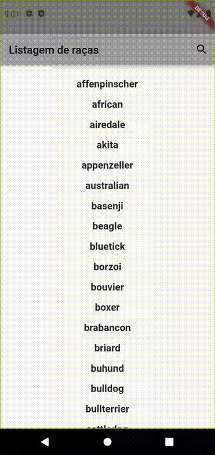
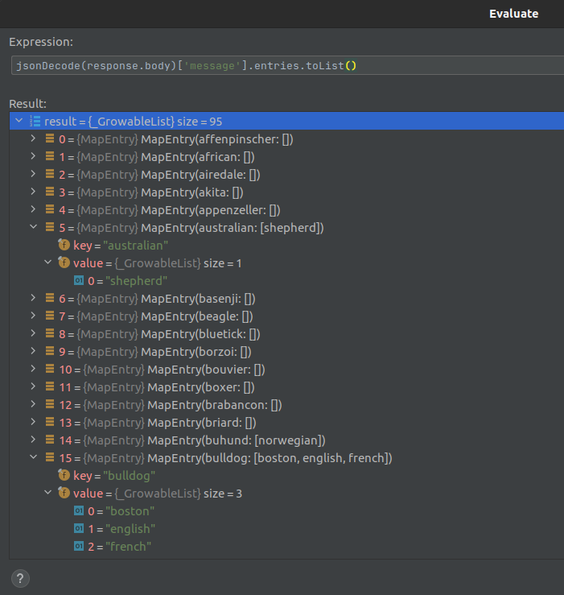
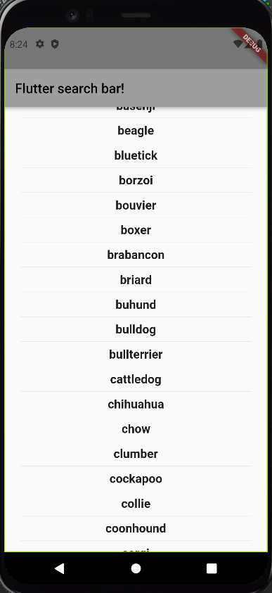

Barra de buscas e consulta a API com Flutter
mg;nl: Tutorial para criar um app em flutter que realiza requisições http numa API e filtra o resultado usando uma barra de busca.
Então essa semana eu comecei a aprender desenvolvimento de apps em Flutter.
Duas questões importantes em qualquer aplicativo, web ou mobile, é a possibilidade de acessar dados remotos, comumente em formato JSON, e disponibilizar ao usuário uma busca, por nome ou palavras-chave.
Dando uma procurada na net encontrei este artigo, com uma proposta muito boa: ele ensina a criar uma barra de busca, de uma fonte remota, usando as ferramentas incluídas no pacote básico do Flutter.
O artigo é um pouco datado (escrito ali por 2018) e utiliza algumas ferramentas já deprecadas.
Neste post, vou analisar o processo do autor enquanto migro sua aplicação para a versão atual do Flutter (em janeiro/2022).
Vou partir do princípio de que você já tem o android studio instalado, com uma VM de um celular ou tablet, como o pixel X3, por exemplo.
Caso você tenha dúvidas de como chegar nesse passo, recomendo get-started do site do Flutter, mas a versão rápida é:
flutter create barra_de_buscas
E substituir o código no arquivo lib/main pelo que está na seção abaixo.
O código completo pode ser consultado neste gist. Ali tambem tem as alterações necessárias no arquivo AndroidManifest.xml e pubspec.yaml .
Overview do app
Abaixo uma prévia do app funcionando:

Nós iremos criar um StatefulWidget, que funcionará como uma página, que vai ter dentro dele tanto a barra de busca quanto a lista com os resultados.
Ele precisa ser Stateful, pois terá seu estado atualizado baseado nos valores digitados na barra, que irão por sua vez atualizar a listagem, utilizando o método setState().
Antes de atualizarmos o estado, precisamos realizar uma requisição na API remota. Os dados recebidos serão tratados, e então passados para a listagem.
A API utilizada é a Dog API, que disponibiliza acesso a um banco de dados de raças e subraças de cachorro, cada uma com uma lista de imagens representativa.
Inicio do projeto e instalação de dependencias.
Você pode iniciar criando um projeto em Flutter no android studio, ou copiar o código abaixo.
Basicamente, removemos todos os comentários e o contador, e alteramos o widget MyHomePage para um novo SearchPage. Lembre-se de alterar também o _MyHomePageState para _SearchPageState.
// Ponto de partida do app, em lib/main.dart
import 'package:flutter/material.dart';
void main() {
runApp(const MyApp());
}
class MyApp extends StatelessWidget {
const MyApp({Key? key}) : super(key: key);
@override
Widget build(BuildContext context) {
return MaterialApp(
title: 'Flutter Searchbar Http',
theme: ThemeData(
primarySwatch: Colors.grey
),
home: const SearchPage(title: 'Flutter search bar!'),
);
}
}
class SearchPage extends StatefulWidget {
const SearchPage({Key? key, required this.title}) : super(key: key);
final String title;
@override
_SearchPageState createState() => _SearchPageState();
}
class _SearchPageState extends State<SearchPage> {
@override
Widget build(BuildContext context) {
return Scaffold(
appBar: AppBar(
title: Text(widget.title),
),
body: const Center(
child: Text('Meu app com barra de busca.'),
)
);
}
}
Para realizar as requisições http, precisamos de uma biblioteca que disponibilize essas funcionalidades.
A extensão mais comum pra requisições http, em 2022, é o http.dart.
Para instalá-la, são três passos.
Adicionar a pacote no arquivo
pubspec.yaml. Deve ficar da seguinte forma:dependencies: flutter: sdk: flutter http: ^0.13.4 // ADICIONARUsando o android studio, você pode clicar no botão "Pub get" para baixar a extensão.
Adicionar uma permissão para o aplicativo realizar requisições http.
No
AndroidManifest.xmldo seu projeto, adicione a seguinte linha, logo abaixo da abertura da tag xml:<manifest xmlns:android="http://schemas.android.com/apk/res/android" package="com.example.searchbar_from_scratch"> <!-- Required to fetch data from the internet. --> // ADICIONAR <uses-permission android:name="android.permission.INTERNET" /> // ADICIONARImportar bibliotecas em
main.dart.As importações são feitas nas primeiras linhas do arquivo:
import 'dart:convert'; // ADICIONAR import 'dart:async'; // ADICIONAR import 'package:flutter/material.dart'; import 'package:http/http.dart' as http; // ADICIONAR
Buscando dados na API
Vamos mostrar uma listagem das raças, disponíveis no endpoint 'https://dog.ceo/api/breeds/list/all' . O formato do JSON recebido é o seguinte:
{
"message":{
"affenpinscher":[],
"african":[],
"airedale":[],
"akita":[],
"appenzeller":[],
"australian":[
"shepherd"
],
"basenji":[],
"bulldog":[
"boston",
"english",
"french"
],
"status":"success"
}
Os dados que queremos estão dentro da propriedade "message". Repare que o JSON tem um formato não muito usual: o nome da raça é a propriedade do objeto. Caso existam "subraças", elas são mostradas como o valor da propriedade, em formato de lista (array).
Graças ao pacote http, podemos criar uma função que busque esses dados.
O valor de retorno é uma classe Future. Essa classe é utilizada em qualquer operação assíncrona.
Como os valores não estarão disponíveis imediatamente (existe uma demora entre realizar a requisição, o processamento no servidor remoto, e o recebimento dos dados no app), essa classe nos permite gerar diferentes layouts baseados na situação atual da requisição: podemos colocar um loader enquanto ela está carregando, um aviso caso ocorra um erro, etc.
A função abaixo pode ser colocada no próprio arquivo main.
Future<dynamic> fetchBreeds() async {
final response =
await http.get(Uri.parse('https://dog.ceo/api/breeds/list/all'));
if (response.statusCode == 200) {
var responseObject = jsonDecode(response.body)['message'];
return responseObject;
}
// Joga uma exceção caso o status não seja http 200
throw Exception('Erro ao carregar listagem de raças.');
}
Repare que definimos o tipo do retorno como <dynamic>. Isto é porque ainda não decidimos como vamos lidar com o resultado. O valor de responseObject que recebemos é no formato:

Repare que o formato chave => valor persiste. O tipo do objeto é um LinkedHashMap. Para facilitar
nossas operações, vamos transformá-lo numa lista contendo tanto o nome da propriedade (que representa a raça) quanto seu valor (que é a listagem de subraças, quando existir).
Para isso, utilizamos os seguintes métodos:
if (response.statusCode == 200) {
var responseObject = jsonDecode(response.body)['message'].entries.toList(); // ALTERAR
return responseObject;
}
O valor de responseObject vai ficar no formato:

Repare que o tipo do resultado mudou para _GrowableList, o que nos permite usar os métodos necessários para filtrar os resultados.
Criando um modelo para os dados da API - Lista de Raças
Até agora, definimos o tipo do resultado da requisição como <dynamic>. Isso permite que qualquer tipo de valor seja utilizado, estruturado de qualquer forma.
Com isso perdemos alguns dos benefícios da linguagem Dart, que não consegue verificar se os dados passados
estão de acordo com o esperado.
Por isso, vamos definir duas classes, uma que recebe uma listagem de raças (BreedsList) e uma que recebe uma única raça (Breed).
class BreedsList {
final List<Breed> breeds;
BreedsList({
required this.breeds,
});
factory BreedsList.fromJson(List<MapEntry<String, dynamic>> parsedJson) {
List<Breed> breeds = <Breed>[];
breeds = parsedJson.map((i) => Breed.fromJson(i)).toList();
return BreedsList(breeds: breeds);
}
}
Esta classe, BreedsList representa a listagem que estamos recebendo da requisição http.
Sua propriedade breeds é uma lista de objetos Breed, que vamos definir em seguida.
Criamos também para essa classe um método fromJson, que recebe uma Lista de "MapEntries". Veja (na Imagem 2) que, ao transformarmos nosso objeto com os métodos .entries.toList(), é exatamente
este o formato de cada item da lista:
5 = {MapEntry}MapEntry(australian: [sheperd]
key = "australian"
value={_GrowableList} size = 1
0 = "sheperd"
O primeiro valor do MapEntry é o nome da raça, por isso, uma String. O segundo valor é uma List, no exemplo acima, mas poderia ser um número, string, boolean, etc, por isso dynamic.
Criando um modelo para os dados da API - Raça
Cada Raça pode ser definida como contendo um nome e uma listagem de subraças.
class Breed {
final String name;
final List<dynamic> subBreeds;
const Breed({
required this.name,
required this.subBreeds,
});
factory Breed.fromJson(json) {
return Breed(
name: json.key,
subBreeds: json.value,
);
}
}
Aqui também criamos um método fromJson, que pega, do json decodificado que nos é passado, o nome da propriedade (lembra que o nome da raça é a propriedade do objeto, no valor que recebemos da API?) e o seu valor (as subraças), passando eles como propriedades para cada objeto Breed.
O método fromJson da classe BreedList transforma todos eles em uma lista, usando o método toList().
Ajustando o retorno da função fetchBreeds()
Agora que definimos as classes utilizadas de modelo para os dados recebidos da API, podemos alterar o tipo do retorno da função fetchBreeds().
Future<BreedsList> fetchBreeds() async { // ALTERAR
final response =
await http.get(Uri.parse('https://dog.ceo/api/breeds/list/all'));
if (response.statusCode == 200) {
var responseObject = jsonDecode(response.body)['message'].entries.toList();
return BreedsList.fromJson( // ALTERAR
responseObject // ALTERAR
);
}
// Joga uma exceção caso o status não seja http 200
throw Exception('Erro ao carregar listagem de raças.');
}
Disponibilizando dados ao carregar a home do app
Quando o usuário abrir o app, vamos carregar a página "SearchPage" por padrão. Precisamos realizar uma requisição para a nossa API e mostrar uma listagem dos resultados.
O Flutter disponibiliza um método initState() que é disparado toda vez que um widget é carregado. Vamos adicioná-lo na nossa página.
class _SearchPageState extends State<SearchPage> {
late Future<BreedsList> futureBreeds; // ADICIONAR
@override // ADICIONAR
void initState() { // ADICIONAR
super.initState(); // ADICIONAR
futureBreeds = fetchBreeds(); // ADICIONAR
} // ADICIONAR
O modificador late é usado para definir variáveis não nulas que serão inicializadas após sua declaração. Fazemos isso para manter futureBreeds no escopo da nossa página.
Renderizando a lista original
Como sabemos o formato de nossos dados, podemos mostrá-los para o usuário. Optei por um formato de lista.
Uma particularidade das requisições http é o Widget FutureBuilder. Ele nos permite renderizar blocos diferentes dependendo do estado da requisição.
Este Widget define o estado da requisição baseado numa variável que ele disponibiliza, a snapshot.
Vamos modificar o body do método build, no nosso _SearchPageState.
@override
Widget build(BuildContext context) {
return Scaffold(
appBar: AppBar(
title: Text(widget.title),
),
body: FutureBuilder<BreedsList>( // ALTERAR
future: futureBreeds, // ADICIONAR
builder: (context, snapshot) { // ADICIONAR
if (snapshot.hasData) { // ADICIONAR
return _buildListOfBreeds(snapshot.data!.breeds); // ADICIONAR
} else if (snapshot.hasError) { // ADICIONAR
return Text('${snapshot.error}'); // ADICIONAR
} // ADICIONAR
return const Center( // ADICIONAR
child: CircularProgressIndicator(), // ADICIONAR
); // ADICIONAR
}), // ADICIONAR
);
}
O tipo passado no Widget FutureBuilder é uma <BreedsList>, exatamente o retorno do nosso método fetchBreeds().
A propriedade future: futureBreeds indica que qual variável será observada para definir o estado do snapshot utilizado no método
builder.
Quando ela tiver dados, ou seja, tiver concluído a requisição, iremos chamar a função _buildListOfBreeds(snapshot.data!.breeds),
que será definida a seguir.
Caso não tiver dados, verificamos se a requisição retornou um erro. Neste caso, ele será printado na tela. O ideal é colocar uma mensagem customizada, mas como estamos depurando o app, pode nos ajudar.
Caso nenhuma das verificações acima passe, vamos renderizar um CircularProgressIndicator() centralizado, que é um loader padrão do Flutter.
Criando o Widget _buildListOfBreeds
Você pode colocar o código abaixo antes da chamada ao método build na classe _SearchPageState.
Widget _buildListOfBreeds(List<Breed> breedList) {
return ListView.builder(
padding: const EdgeInsets.all(16.0),
itemCount: breedList.length,
itemBuilder: (context, i) {
return Column(children: [
Text(breedList[i].name,
style:
const TextStyle(fontWeight: FontWeight.bold, fontSize: 18.0)),
const Divider()
]);
},
);
}
Com isso, a aparência do nosso app deve estar conforme a imagem abaixo.
Talvez seja preciso realizar um hot restart, ou reiniciar o aplicativo, caso você receba um erro de variáveis não iniciadas.

Definindo as variáveis necessárias
Nosso widget precisa guardar alguns dados, e para isso vamos definir algumas variáveis logo no início da classe _SearchPageState.
class _SearchPageState extends State<SearchPage> {
late Future<BreedsList> futureBreeds;
/// Define o ícone inicial usado na barra de busca
IconData _searchIcon = Icons.search; // ADICIONAR
/// Define o título inicial da página
Widget _appBarTitle = const Text('Listagem de raças'); // ADICIONAR
/// Essa variável vai guardar o valor digitado na barra de busca
String _searchText = ""; // ADICIONAR
/// Esta variável vai guardar os valores filtrados, que devemos mostrar ao usuário na listagem
List<Breed> _filteredBreeds = []; // ADICIONAR
@override
void initState() {
super.initState();
futureBreeds = fetchBreeds();
Nas próximas seções vamos verificar a utilidade de cada variável definida.
Adicionando a barra de busca no cabeçalho
O local onde o usuário irá digitar será o próprio cabeçalho do app.
Cada página possui uma propriedade AppBar, onde podemos definir o título da página e colocar também alguns botões (chamados actions).
Começaremos com um botão que permite ao usuário abrir a barra de busca.
Adicione a seguinte função dentro da classe _SearchPageState.
void _searchPressed() {
setState(() {
if (_searchIcon == Icons.search) {
_searchIcon = Icons.close;
/// Altera o título, inicialmente um widget de texto, para um TextField
_appBarTitle = const TextField(
decoration: InputDecoration(
prefixIcon: Icon(Icons.search), hintText: 'Busque por raças...'),
);
} else {
_searchIcon = Icons.search;
/// Altera o título novamente para um widget de texto
_appBarTitle = const Text('Listagem de raças');
}
});
}
Essa função verifica qual o ícone atual e, baseado no seu IconData (propriedade que define a imagem do ícone), altera tanto o
ícone quanto o título do app.
Para que ela seja executada, precisamos ativá-la na propriedade onPressed do nosso ícone inicial.
Vamos alterar o método build da nossa _SearchPageState.
@override
Widget build(BuildContext context) {
return Scaffold(
appBar: AppBar(
title: _appBarTitle, // ALTERAR
actions: <Widget>[ // ADICIONAR
IconButton( // ADICIONAR
onPressed: _searchPressed, // ADICIONAR
icon: Icon(_searchIcon), // ADICIONAR
) // ADICIONAR
], // ADICIONAR
),
body: FutureBuilder<BreedsList>(
future: futureBreeds,
builder: (context, snapshot) {
if (snapshot.hasData) {
return _buildListOfBreeds(snapshot.data!.breeds);
} else if (snapshot.hasError) {
return Text('${snapshot.error}');
}
return const Center(
child: CircularProgressIndicator(),
);
},
),
);
}
Adiconar uma action na nossa AppBar cria o ícone com a funcionalidade definida em onPressed.
Apertar o botão agora deve alternar entre o campo de busca, com o botão para fechar, e o ícone da lupa.
Precisamos salvar o texto digitado pelo usuário para utilizá-lo no filtro.
Acessando os valores digitados na barra de busca
Para acessar o texto digitado, utilizamos a propriedade onChanged do TextField.
Dessa forma, podemos atualizar a variável _searchText cada vez que o valor do campo de busca for alterado.
void _searchPressed() {
setState(() {
if (_searchIcon == Icons.search) {
_searchIcon = Icons.close;
/// Altera o título, inicialmente um widget de texto, para um TextField
_appBarTitle = TextField( // ALTERAR
onChanged: (text) { // ADICIONAR
setState(() { // ADICIONAR
_searchText = text; // ADICIONAR
}); // ADICIONAR
}, // ADICIONAR
decoration: const InputDecoration( // ALTERAR
prefixIcon: Icon(Icons.search), hintText: 'Busque por raças...'),
);
} else {
_searchIcon = Icons.search;
_appBarTitle = const Text('Listagem de raças');
_searchText = ""; // ADICIONAR
}
});
}
Repare que no bloco else estamos zerando o valor da _searchText. Isso significa que quando o usuário fechar a barra de busca,
a listagem descarta o filtro.
Filtrando a listagem de raças
Precisamos de um método que, para qualquer string, encontre os nomes de raça, dentro da nossa listagem, que possuem esta string.
Adicione a função abaixo dentro da _SearchPageState.
List<Breed> _applySearchFilter(List<Breed> breeds) {
List<Breed> _filtered = [];
for (var i = 0; i < breeds.length; i++) {
if (breeds[i].name.contains(_searchText.toLowerCase())) {
_filtered.add(breeds[i]);
}
}
return _filtered;
}
Podemos utilizar o fato das nossas Breeds estarem em formato de lista para realizar um for loop simples.
Agora, precisamos utilizar esta função na nossa lista original, e passar o resultado como argumento dentro do bloco FutureBuilder.
body: FutureBuilder<BreedsList>(
future: futureBreeds,
builder: (context, snapshot) {
if (snapshot.hasData) {
final _filteredList = _applySearchFilter(snapshot.data!.breeds); // ADICIONAR
if (_filteredList.isEmpty) { // ADICIONAR
return const Center(child: Text("Nenhuma raça encontrada!")); // ADICIONAR
} // ADICIONAR
return _buildListOfBreeds(_filteredList); // ALTERAR
} else if (snapshot.hasError) {
return Text('${snapshot.error}');
}
return const Center(
child: CircularProgressIndicator(),
);
},
),
Adicionamos também um aviso, caso o filtro não retorne nenhum resultado.
Pronto! Temos um filtro funcional.
Fontes:
- https://dev.to/pktintali/late-variables-in-dart-dart-learning-series-1-2opf
- https://dart.dev/guides/language/type-system
- https://api.dart.dev/stable/2.15.1/dart-core/Map-class.html
- https://api.dart.dev/stable/2.15.1/dart-collection/LinkedHashMap-class.html
- https://docs.flutter.dev/cookbook/forms/text-field-changes#1-supply-an-onchanged-callback-to-a-textfield-or-a-textformfield